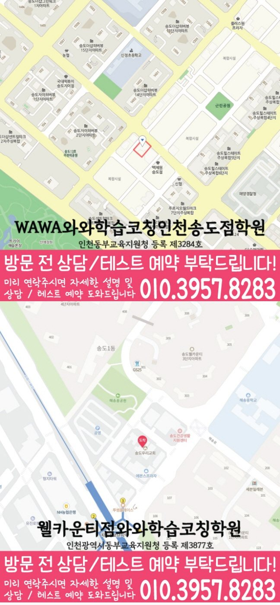

MIDDLE MATH
송도 중등 수학학원
송도 중등 수학학원 상담 전 고등 과정 전환과 선수 개념·단원 연결 풀이 기록과 학교 시험 학습 순서, 확인된 센터·가능 학년 정보를 살펴보세요.
01 Quick answer
송도 중등 수학: 중3 수학의 기초를 고등 과정 준비로 연결하는 방법
송도 중등 수학의 이번 초점은 ‘중3 수학의 기초를 고등 과정 준비로 연결하는 방법’이며, 실제 시험지와 교재 기록에서 시작합니다. 진단 자료: 중3 시험지에서 고등 수학에도 다시 쓰이는 중등 선수 개념과 계산이 끊긴 줄을 함께 표시하세요. 이번 행동: 필요한 중등 개념만 짧게 복습한 뒤 고등 수준 예시 문제의 조건을 식으로 바꾸어 보세요. 재확인: 일주일 뒤 새 난도의 문제에서도 도움 없이 첫 식과 풀이 순서를 시작하는지 확인하세요.
확인 기준
송도 시험지에서는 고등 과정 전환에서 막힌 이유를, 다음 계획에서는 선수 개념·단원 연결의 확인일을 찾아 이용 조건과 구분합니다.



010-6839-8283010-6839-8283학습 답변 요약
핵심 주제는 ‘중3 수학의 기초를 고등 과정 준비로 연결하는 방법’입니다. 고등 과정 전환과 선수 개념·단원 연결의 출발 상태를 확인하고 서술형 풀이와 개념 연결의 실행 기록과 학교·센터 사실을 분리해 살펴봅니다.
송도 중등 수학 진단: 중3 수학의 기초를 고등 과정 준비로 연결하는 방법
송도에서 살필 중등 수학 주제는 ‘중3 수학의 기초를 고등 과정 준비로 연결하는 방법’입니다. 학생에게 ‘중학교 문제 풀이에서 고등 수학의 개념 연결과 긴 계산 과정으로 넘어갈 준비가 되어 있는지’를 묻고 답을 최근 풀이 흔적과 비교하세요.
끝으로 ‘현재 단원의 문제에서 이전 학년·앞 단원의 개념이 필요한 지점을 알아보지 못하는지’를 확인해 단순 실수와 반복되는 병목을 구분하고 고등 과정 전환에 설명이 필요한지, 선수 개념·단원 연결을 혼자 연습할지 판단하세요. 일주일 뒤에는 ‘중3 수학의 기초를 고등 과정 준비로 연결하는 방법’에 해당하는 새 문제도 혼자 시작하는지 다시 확인합니다.
최근 시험지에서 고등 과정 전환과 선수 개념 연결을 구분하는 기준
진단 자료에서는 ‘최근 시험지, 고등 수준 예시 문제와 일주일 학습 기록’과 ‘최근 문제에서 다시 필요해진 선수 개념과 현재 단원 풀이가 끊긴 위치’를 한 곳씩 표시하고 자료 위치·날짜·처음 판단한 이유가 달라진 지점을 남기세요.
다시 볼 날짜에는 ‘무리한 선행보다 새 난도의 조건을 읽고 풀이를 끝내는 범위가 넓어졌는지’와 ‘단원명이 달라도 필요한 선수 개념을 스스로 찾아 현재 풀이에 적용하는지’를 차례로 묻습니다. 두 답의 변화가 이 학습 초점에 필요한 설명과 독립 연습을 나누는 기준입니다.
시험 전후 고등 과정 전환과 선수 개념 연결의 비중을 조정하는 방법
내신 기록에는 범위·개념·유형·서술형을, 누적 유형 문제 기록에는 유형·근거·소요 시간을 적습니다. 두 기록 모두 ‘입학 전 기초 보완과 학교 일정 이후 내신 준비를 나누는 기준’과 ‘내신 범위의 진도와 여러 단원이 섞인 누적 문제에 필요한 선수 개념 보완을 따로 배치하는 기준’ 중 실제 자료에 맞는 기준을 고르세요.
내신 마감일과 누적 유형 문제 재확인일을 달력에 따로 표시하고 두 일정마다 고등 과정 전환과 선수 개념·단원 연결의 최소 분량을 적으세요. 한쪽이 밀리면 다음 주 비중을 조정합니다.
‘중3 수학의 기초를 고등 과정 준비로 연결하는 방법’을 시험 주간에 적용할 때는 고등 과정 전환 점검일과 선수 개념·단원 연결 재확인일을 다른 줄에 적으세요. 시험이 끝난 뒤에는 고등 과정 전환과 선수 개념·단원 연결 기록 가운데 학생이 근거를 설명하지 못한 영역만 다음 주 계획에 남깁니다.
송도 이용 조건을 확인한 뒤 고등 과정 전환 질문을 비교하는 방법
학교 범위를 확인할 때 참고할 명칭에는 신정중 등이 포함돼 있으나, 이 명칭은 참고용이므로 재학 학교의 범위와 개설 여부를 별도로 물어야 합니다.
수학 가능 학년 항목에서 중1·중2·중3 표기를 확인할 수 있어 서술형 풀이와 개념 연결을 어느 학년에 적용하는지는 현재 개설 범위와 함께 물어보세요. 페이지가 안내하는 센터명은 와와학습코칭센터 송도점, 제공 주소는 인천 연수구 해돋이로 165 차오름프라자 302입니다. 와와학습코칭센터 송도점 등록 전에는 교습비 자료의 기준과 현재 시간표가 같은 시점의 정보인지 확인합니다.
고등 과정 전환과 선수 개념 연결의 분량을 정하는 7일 점검표
첫 7일에는 ‘최근 시험지, 고등 수준 예시 문제와 일주일 학습 기록’을 기준선으로 남깁니다. 이번 주 실행 항목은 ‘선수 개념과 계산 출발 상태를 확인한 뒤 고등 문제 한 세트에 적용하기’이며 하루 분량보다 완료 흔적을 기록하는 일이 우선입니다.
일주일 뒤 ‘무리한 선행보다 새 난도의 조건을 읽고 풀이를 끝내는 범위가 넓어졌는지’를 같은 자료로 확인합니다. 첫 기록과 달라진 근거가 있을 때만 ‘막힌 문제에 필요한 앞 개념만 짧게 복습하고 현재 문제로 돌아와 연결 이유를 적기’를 새 과제로 추가하세요. ‘중3 수학의 기초를 고등 과정 준비로 연결하는 방법’의 첫 행동은 필요한 중등 개념만 짧게 복습한 뒤 고등 수준 예시 문제의 조건을 식으로 바꾸어 보세요. 다음 판단에서는 일주일 뒤 새 난도의 문제에서도 도움 없이 첫 식과 풀이 순서를 시작하는지 확인하세요.
최근 시험지로 준비하는 고등 과정 전환 상담 질문
상담 전 ‘중3 수학의 기초를 고등 과정 준비로 연결하는 방법’을 설명할 최근 수학 자료와 가능한 가정 학습 시간을 적어 두세요. ‘선행 범위보다 고등 과정에서 혼자 수행할 수 있는 단계를 어떻게 확인하는지’와 ‘진도를 되돌릴 때 전체 복습이 아니라 필요한 선수 개념만 고르는 기준이 무엇인지’를 분리해 질문합니다.
답변은 고등 과정 전환의 첫 행동과 선수 개념·단원 연결을 다시 확인할 날짜로 바꿔 적으세요. 주소·학년·시간표·교습비는 학습 질문과 다른 줄에 남깁니다.
- 학생 자료최근 시험지, 고등 수준 예시 문제와 일주일 학습 기록
- 시험 계획학교 범위표와 선수 개념·단원 연결 연습 완료일·재확인일
- 재확인서술형 풀이 확인 날짜와 학생 설명 기록
- 이용 조건수학 가능 학년(중1·중2·중3)·시간표·교습비·통학 동선
02 Parent perspective
송도 중등 수학 학부모 상담 상황
아래 송도 중등 수학 상담 장면은 실제 이용 후기나 특정 학생의 성과가 아닌 준비용 가상 예시입니다. 학습 결과는 학생의 출발점과 실천 정도에 따라 달라질 수 있습니다.
시험 뒤 공부 순서를 정하지 못한 송도 학생을 가정했습니다. 학부모는 ‘중3 수학의 기초를 고등 과정 준비로 연결하는 방법’을 중심으로 고등 과정 전환에서 막힌 이유와 선수 개념·단원 연결의 다음 확인일을 나누어 적습니다.
송도의 참고 학교와 실제 재학 학교가 다른 경우를 가정했습니다. 학부모는 시험 범위표와 수학 가능 학년(중1·중2·중3)을 대조한 뒤 선수 개념·단원 연결의 확인 방식과 서술형 풀이의 점검 주기를 질문합니다.
03 FAQ
송도 중등 수학 자주 묻는 질문
학생 자료, 가능 학년과 실제 이용 조건을 나누어 답했습니다.
송도 중등 수학에서 ‘중3 수학의 기초를 고등 과정 준비로 연결하는 방법’은 어떤 자료부터 확인하나요?
첫 확인 자료는 ‘최근 시험지, 고등 수준 예시 문제와 일주일 학습 기록’입니다. 학생이 ‘무리한 선행보다 새 난도의 조건을 읽고 풀이를 끝내는 범위가 넓어졌는지’에 직접 답하게 한 뒤 이번 주에는 ‘선수 개념과 계산 출발 상태를 확인한 뒤 고등 문제 한 세트에 적용하기’만 실행해 보세요.
고등 과정 전환과 선수 개념·단원 연결 진단 기록은 어떻게 나누나요?
첫 풀이 기록과 다시 설명한 기록을 고등 과정 전환과 선수 개념·단원 연결 영역별로 분리하세요. 각 기록에 날짜와 도움받은 지점을 함께 적습니다.
학교 시험과 누적 유형 문제에서 고등 과정 전환과 선수 개념·단원 연결 비중은 어떻게 나누나요?
내신 기간에는 학교 범위 완료 흔적과 고등 과정 전환 기록을, 평소에는 누적 유형 문제의 선수 개념·단원 연결 기록을 남깁니다. 어느 쪽이든 ‘입학 전 기초 보완과 학교 일정 이후 내신 준비를 나누는 기준’과 ‘내신 범위의 진도와 여러 단원이 섞인 누적 문제에 필요한 선수 개념 보완을 따로 배치하는 기준’을 자료에 맞게 선택하세요.
상담 전 서술형 풀이와 개념 연결을 확인하려면 어떤 자료를 가져가나요?
서술형 풀이의 ‘서술형 초안에서 생략된 조건·등식·결론과 수정한 답안’과 개념 연결의 ‘개념 설명 메모와 대표 문제에서 해당 공식을 선택한 이유’가 보이는 자료를 각각 한 곳씩 고르세요. 두 자료를 언제 다시 확인할지도 상담 메모에 적습니다.
송도 중등 수학 상담에서 가능 학년과 참고 학교는 어떻게 확인하나요?
제공된 송도 페이지의 수학 학년은 중1·중2·중3입니다. 실제 수업 가능 여부는 상담 시점의 시간표로 확인하세요. 공개 자료에는 신정중 등이 참고 학교로 표시돼 있습니다. 수업 가능 여부는 학생의 학교·범위·현재 개설 상황을 함께 확인한 뒤 판단하세요.
04 Related
송도 관련 학원·상담 페이지
같은 지역의 과목 조합과 학년 카테고리, 앞뒤 지역 안내를 함께 확인하세요.